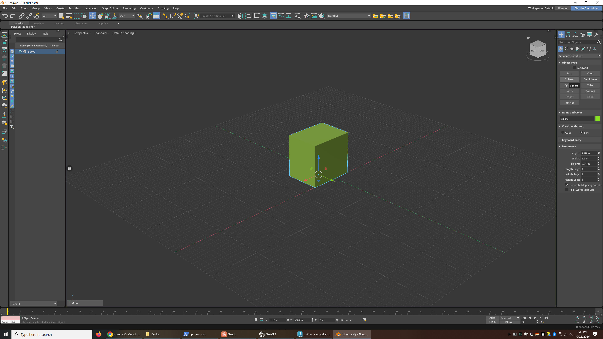

Blender MaxFor Max users,
in Blender.
Your familiar workflow.
Blender underneath.
The Command Panel. The modifier stack. Quad menus, four viewports and the shortcuts your hands already know. Blender Max brings them together in a dedicated workspace, powered by Blender’s own tools.
Development preview 0.5.1

A workspace you can settle into.
A Max-style main toolbar, ribbon, Scene Explorer and Command Panel around Blender’s live 3D viewport.
- W / E / R
- Move, rotate, scale
- Alt + W
- One view or four
- Right-click
- Quad menu
A familiar workspace.
A way back, always.
Install the extension, then choose Blender Studio Max in the top bar to enter the Max-style workspace. Choose Blender to return to Blender’s interface and controls.
Your scene stays in Blender. Model with Max-style controls, switch back for a Blender tutorial, and keep working in the same file.
The toggle below previews interface screenshots.
From download
to your first viewport.
Use Blender 5.0.x. No 3ds Max installation, external Python packages or account is needed to use the downloaded extension.
Download the ZIP
Get blender_studio_max-0.5.1.zip. Keep it zipped; Blender installs the archive directly.
Install from disk
Open Edit → Preferences → Get Extensions. Use the menu at the top right, choose Install from Disk, then select the ZIP and enable the extension.
Choose your workspace
Click Blender Studio Max at the right of Blender’s top bar. Use the neighboring Blender switch whenever you want to go back.
Let muscle memory
do its thing.
A few familiar keys to get started.
- W E R
- Move · Rotate · Scale
- Alt + W
- Maximize the active viewport
- N
- Toggle Auto Key
- Shift + N
- Open Blender’s sidebar and add-on panels
Built on Blender.
Still a preview.
This is a developing reconstruction of core Max-style workflows. It is a way to work inside Blender, with practical limits.
Blender’s scene, geometry and renderer
Objects, modifiers, materials and animation use Blender’s own systems. The extension does not import or open
.maxfiles.Core workflows, partial coverage
Some Max commands and interaction details are not implemented. Commands without a Blender equivalent are shown disabled.
Blender 5.0.x
This preview targets Blender 5.0.x. Compatibility with other Blender versions is not currently supported.
Work in progress
Save your work before trying new workflows. The interface and available tools can change as the preview develops.
A few things
you might ask.
Is this just a Max keymap?
It includes a dedicated workspace, a Command Panel with parametric primitives and modifier controls, quad menus, a Scene Explorer, timeline controls and custom editors, alongside Max-style shortcuts.
Do I need 3ds Max installed?
No. Once downloaded, the extension runs inside Blender without an Autodesk application, account or external Python packages.
Can I switch back to regular Blender?
Yes. Use the Blender / Blender Studio Max switch at the right of the top bar to return to Blender’s interface and controls.
Can it open my .max files?
No. Blender Max does not add .max file support. It works with Blender’s own scene and data systems.
Which version of Blender does it support?
The 0.5.1 development preview supports Blender 5.0.x. Other Blender versions are not supported by this preview.
Is it free?
Yes. The extension is free and distributed under GPL-3.0-or-later. The license is included with the extension and is available here.